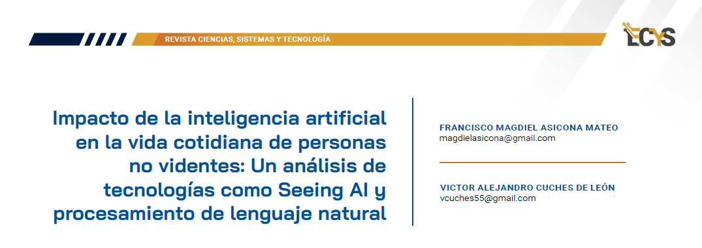

20 Impacto de la inteligencia artificial en la vida cotidiana de personas no videntes: Un análisis de tecnologías como Seeing AI y procesamiento de lenguaje natural {#5.4 }

PALABRAS CLAVE Inclusión, Discapacidad, Procesamiento, Análisis, Accesibilidad, Confiabilidad
20.1 Introducción
En los últimos años, hemos presenciado una evolución significativa en el campo de la IA, generando mejoras sustanciales en la accesibilidad al contenido para personas con discapacidad visual. El desarrollo de software impulsado por IA ha permitido a personas no videntes acceder e interactuar con contenido visual en modos que anteriormente parecían fuera de alcance.
En este contexto, se explora el impacto de la inteligencia artificial en la vida diaria de personas no videntes, centrándonos en tecnologías específicas como Seeing AI y el procesamiento de lenguaje natural (PLN). Estas herramientas sirven como un ejemplo significativo de cómo la tecnología puede ayudar en gran manera para las personas invidentes y con visión reducida.
20.2 Artículo
Seeing AI de Microsoft es una esperanza y avance para las personas con discapacidades visuales, ofreciendo un conjunto de características inteligentes y prácticas que transforman la experiencia diaria. Entre las funcionalidades más destacadas se encuentra el Reconocimiento de Texto en Tiempo Real, que permite a los usuarios escuchar la información contenida en documentos, letreros o pantallas de computadora o móviles mediante la cámara del dispositivo móvil.
Además, la aplicación ofrece un Reconocimiento de Personas, permitiendo a los usuarios saber quién está a su alrededor describiendo la persona. Esta característica no solo mejora la seguridad, sino que también enriquece las interacciones sociales al proporcionar información sobre las personas que se encuentran a su alrededor. Asimismo, la aplicación destaca por su capacidad para identificar objetos y describir escenas, lo que proporciona una comprensión más completa del entorno.
También Seeing AI proporciona otras funcionalidades como el Reconocimiento de billetes y la Capacidad para leer códigos de barras son otras funciones valiosas que facilitan la vida diaria de los usuarios al proporcionar información sobre productos y dinero. Además, se actualiza regularmente para incorporar nuevas características y mejorar su rendimiento.
La aplicación de Microsoft para personas con discapacidad visual, utiliza una variedad de algoritmos de inteligencia artificial para llevar a cabo sus funciones. Estos algoritmos incluyen técnicas de procesamiento de imágenes, reconocimiento de objetos, reconocimiento óptico de caracteres (OCR), detección de rostros y características de aprendizaje automático para mejorar su capacidad de reconocimiento y descripción del entorno.
Seeing AI no solo es una aplicación tecnológica, sino un ejemplo tangible de cómo la inteligencia artificial puede ser una fuerza positiva en la vida de las personas con discapacidades visuales. Al poner el poder de la información al alcance de las personas invidentes, la aplicación promueve la autonomía, la inclusión y la igualdad de oportunidades.
Figura 20.1: Seeing IA en dispositivos móviles
Procesamiento de lenguaje natural
Uno de los objetivos de los sistemas de inteligencia artificial es la comprensión de textos estructurados y la extracción de información relevante de los mismos. El Procesamiento del Lenguaje Natural (PLN) se enfoca en transformar el lenguaje natural en una forma que las computadoras puedan procesar, con el fin de proporcionar información confiable y segura a personas no videntes que no pueden percibir la información visualmente.
El uso del PLN posibilita que las personas no videntes tengan accesibilidad a diversas funciones, entre las que se incluyen:
- Análisis e interpretación de texto en documentos, correos electrónicos, etc.
- Interpretación del lenguaje hablado y síntesis de respuestas verbales.
- Conversión fiable de datos de voz a texto.
Figura 20.2: Uso de reconocimiento óptico de caracteres
Otra tecnología crucial y relacionada con el PLN es el reconocimiento óptico de caracteres (OCR). Este consiste en una inteligencia artificial diseñada para convertir texto impreso o escrito a mano en un formato que pueda ser procesado. Esto posibilita que las personas con discapacidad visual accedan a una amplia variedad de materiales impresos, como libros, documentos e incluso menús de restaurantes, al escanearlos con un teléfono inteligente u otro dispositivo.
20.3 Conclusiones
En el inmenso mundo de la innovación tecnológica, Seeing AI y PLN destacan como un faro de accesibilidad y empoderamiento. A través de sus características inteligentes y perspicaces, estos desarrollos no solo superan las barreras físicas para aquellos con discapacidades visuales, sino que también redefine la forma en que interactuamos con nuestro entorno.
A medida que la tecnología avanza, el futuro de la inteligencia artificial (IA) se muestra prometedor para mejorar la accesibilidad a contenido para personas con discapacidades. La IA tiene el potencial de transformar cómo creamos, compartimos y consumimos información, haciéndola más inclusiva.
20.4 Referencias
[1] FasterCapital. “Impacto de la IA en la accesibilidad al contenido para personas con discapacidad” FasterCapital, 07 de diciembre de 2023. https://fastercapital.com/es/contenido/Impacto-de-la-IA-en-la-accesibilidad-al-contenido-parapersonas-con-discapacidad.html. [Último acceso: 04 de febrero de 2024]
[2] Figuero, Juan. “La inteligencia artificial está ayudando a las personas ciegas a ver el mundo” Hipertextual, 06 de julio de 2023. https://hipertextual.com/2023/07/la-inteligencia-artificial-esta-ayudando-a-las-personas-ciega s-a-ver-el-mundo. [Último acceso: 04 de febrero de 2024]
[3] Whitney, Lance “Microsoft Seeing AI app lands on Android to help blind and visually impaired users”, 5 de diciembre de 2023. https://www.zdnet.com/article/microsoft-seeing-ai-app-lands-on-android-to-help-blind-and-vi suallyimpaired-users/ [Último acceso: 04 de febrero de 2024]
[4] Aquino, Steven “Microsoft Releases Seeing AI App On Android, Adds Features”, 4 de diciembre de 2023. https://www.forbes.com/sites/stevenaquino/2023/12/04/microsoft-releases-seeing-ai-app-on-a ndroidadds-features/?sh=49580699753f [Último acceso: 04 de febrero de 2024]
[5] Merino, Marcos “Seeing AI, la app de Microsoft que va describiendo el contenido de las fotos a las personas ciegas”, 15 de marzo de 2019. https://www.xataka.com/inteligencia-artificial/seeing-ai-app-microsoft-que-va-describiendo-contenido-fotos-a-personas-ciegas [Último acceso: 04 de febrero de 2024]
[6] Saqib Shaikh, Founder and Lead, Microsoft Seeing AI, 4 de diciembre de 2023. https://blogs.microsoft.com/accessibility/seeing-ai-app-launches-on-androidincluding-new-a nd-updated-features-and-new-languages/ [Último acceso: 17 de febrero de 2024]